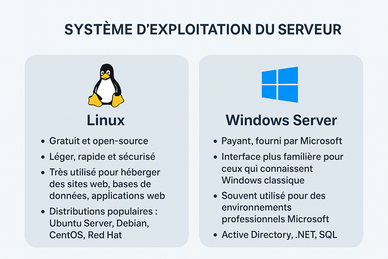

Chapitre II : Système d’exploitation du serveur
🖥️ 1. Qu’est-ce qu’un OS de serveur ?
- C’est le logiciel de base qui permet de faire fonctionner le serveur
- Il gère les ressources CPU, RAM, stockage, réseau et permet d’exécuter des applications
- Sans OS, le serveur serait comme un ordinateur sans système : inutilisable
🐧 2. Les principaux OS de serveurs
- Linux (le plus courant)
- Gratuit et open-source
- Léger, rapide et sécurisé
- Très utilisé pour héberger des sites web, bases de données, applications web
- Distributions populaires : Ubuntu Server, Debian, CentOS, Red Hat
👉 Exemple : la majorité des serveurs web dans le monde tournent sous Linux.
- Windows Server
- Payant, fourni par Microsoft
- Interface plus familière pour ceux qui connaissent Windows classique
- Souvent utilisé pour des environnements professionnels Microsoft (Active Directory, .NET, SQL Server)
📡 Exemple concret :
- Si tu lances un site WordPress, tu seras presque toujours sur Linux (Ubuntu Server)
- Si tu bosses dans une entreprise avec beaucoup de logiciels Microsoft, tu seras plutôt sur Windows Server

Retour au sommaire